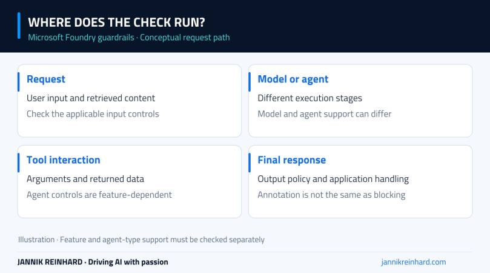
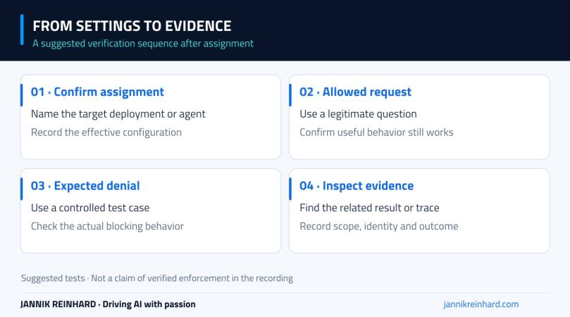

Microsoft Foundry guardrails are worth testing before an agent reaches real users. But a configuration screen is not proof that a request will be blocked. In this episode, I walk through the available controls and explain where I would verify their effect.
The video covers guardrail settings, deployment assignments, blocklists and the wider compliance area in Foundry. It is a configuration walkthrough, not a demonstration of every protection working end to end. The notes below make that distinction explicit so you can use the episode as a starting point for your own tests.
Video language: German · Duration: 8:39. Video originally published 11 August 2026; this written companion was added on 22 September 2026. Portal labels and feature availability can change.
Start with the deployment you actually use
The first thing I inspect is the guardrail configuration associated with a model deployment. A policy elsewhere in the project does not tell me what this particular call is using. I want to connect the application’s deployment to the relevant configuration before discussing individual settings.
That is especially important when a project has several deployments. A successful test against one endpoint does not establish how another endpoint behaves. Write down the deployment name, guardrail configuration and test identity together so the result can be reproduced.
In the recording, I review the model’s guardrail setting and then open the area for creating a configuration. The goal is to understand the choices, not to recommend moving every control to its strictest setting without checking the workload.
Annotation and blocking answer different questions
One practical choice is whether a control annotates a result or blocks it. An annotation gives information that the surrounding system may need to inspect. Blocking changes what gets through. Do not treat the two as equivalent because the same risk category appears on both screens.
For example, a security assistant may need to discuss harmful techniques defensively. A useful test set must include legitimate questions that resemble risky content, as well as requests that should be stopped. Otherwise you may reduce one risk while making the assistant unusable for its intended job.

Conceptual intervention points. Which checks are available depends on the deployment, agent type and feature support.
Separate model controls from agent controls
A model response is only part of an agent’s activity. An agent may select a tool, supply arguments, read the result and produce a final answer. Controls for those stages should not be confused with filtering the final text alone.
The portal walkthrough includes input and output settings and options associated with agent activity. Some agent guardrail features are preview features or apply only to particular agent types. For instance, an option shown for a hosted agent should not be assumed to govern every prompt agent or external application.
Microsoft’s guardrails documentation is the place to confirm current support and assignment requirements. The practical question remains: which part of my actual request path does this setting control?
I would draw that path before making broad claims about coverage. User input, retrieved documents, tool arguments, tool responses and final output can carry different risks. An unchecked stage does not become protected simply because the final response passed a filter.
The recording also reviews blocklists and matching options. These can be useful for specific patterns, but a list of strings is not a substitute for access control or a complete data-classification strategy.
If you use a custom pattern, test it against a small set of expected matches and near matches. Include harmless content that must remain allowed. A broad expression may catch the obvious example and also block perfectly legitimate support requests.
The same caution applies to protected-material and personal-information options. Review what the selected feature detects, where it runs and what action follows. A checked box is not a blanket compliance guarantee, and a control’s name is not a complete description of its limitations.
Assignment is part of the configuration
Creating a guardrail definition and applying it are separate steps. I review how a configuration can be assigned to the relevant model deployment or agent. After assignment, I would return to the target and verify the effective configuration, rather than relying only on the creation dialog.
For an application test, keep the endpoint and identity constant while changing one policy setting. Then repeat both a permitted request and a request expected to trigger the control. Save the resulting behavior and relevant diagnostic evidence. If the application silently switches deployments, the comparison is no longer meaningful.

Suggested verification sequence after configuration. This sequence is not presented as an enforcement result from the video.
Compliance settings need their own rollout
Later in the episode, I open the compliance policy wizard and review scope and exceptions. That wizard is cancelled in the recording. It should not be read as proof that a new subscription or resource-group policy was deployed.
I also show integration options around Defender and Purview. Seeing those options is useful for planning, but it is different from enabling them, assigning the required permissions, producing test activity and confirming that the expected evidence arrives.
For those integrations, Microsoft’s Foundry compliance and security guidance provides the current prerequisites. I would handle each integration as a separate change with a named owner, an agreed scope and a verification step.
My follow-up checklist
Before I call a guardrail ready for a pilot, I want clear answers to these questions:
- Which deployment or agent has the configuration assigned?
- Is the control annotating, blocking, or relying on an application action?
- Which legitimate requests still work?
- Which unwanted requests were actually stopped?
- Can I find evidence for those results without exposing sensitive prompts unnecessarily?
- Who reviews false positives and decides when the policy should change?
This is where guardrails connect to the wider architecture. My secure Microsoft Foundry guide discusses the surrounding identity and network boundaries. The Foundry landing-zone walkthrough puts those decisions into the Azure resource structure.
The takeaway is not “turn every option on.” It is to choose controls for a defined risk, assign them to the right request path and test both sides of the boundary. That gives you something much more useful than a reassuring screenshot of a settings page.
Stay healthy, Cheers Jannik